https://glassfish.dev.java.net/downloads/v2-b41d.html
If you set a breakpoint on a JSP, the server will be stopped and you can use all the Debugger features from Eclipse to debug your Java EE application:
| If you're behind a firewall, make sure you have set an SSL proxy: Bring up Preferences, then expand General, Network Connections and fill in the values for your SSL proxy. If you don't have a SSL proxy but a you have a plain http proxy, be sure to check the checkbox Use this proxy server for SSL | 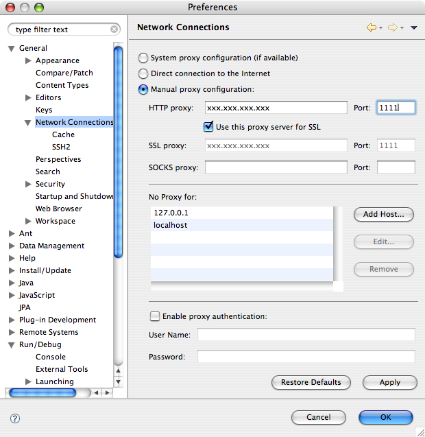 |
| Now, switch to the "Java EE" perspective. For example: | 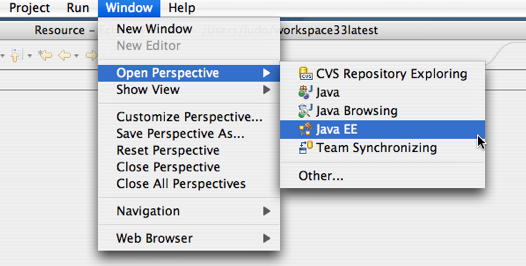 | Now, In the Server Tab, use the popup menu to call the "New Server" wizard: | 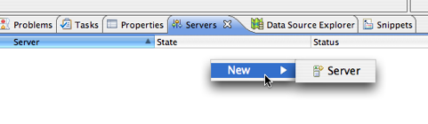 |
| Click on the link "Download additional server adapters". | 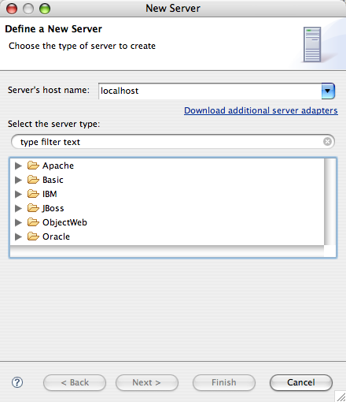 |
|
|
| Select the GlassFish Java EE 5 Server entry | 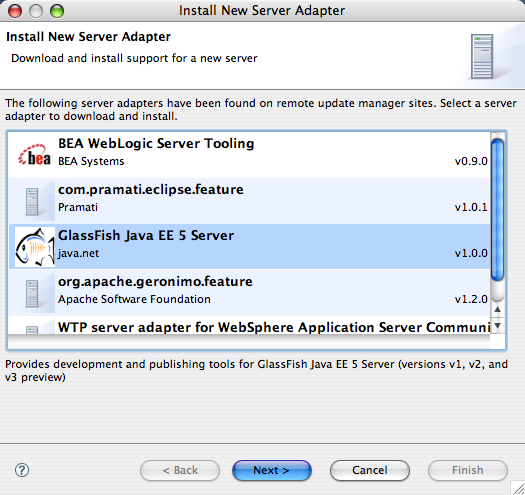 |
| Accept the license to download the GlassFish adapter | 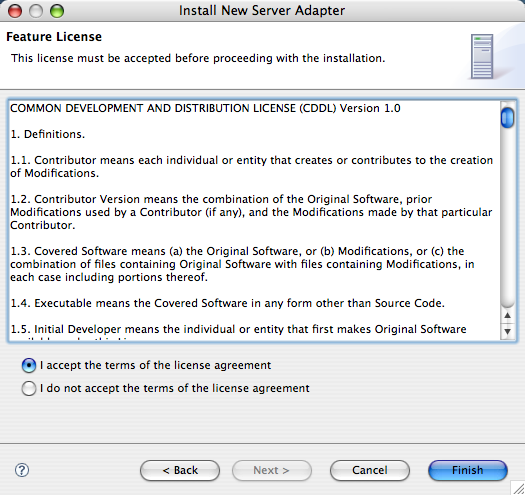 |
| Eclipse will now download the adater from the GlassFish update Center. Click the OK button to continue. | 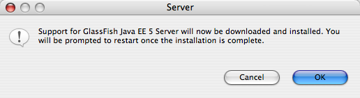 |
| After the download, Eclipse will prompt for a restart. Click the Yes button to continue: | 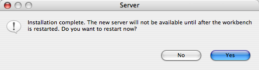 |
| After a fresh restart, you'll see the GlassFish category in the "New Server" wizard: | 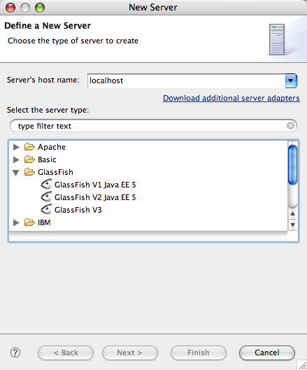 |
| Select a version of GlassFish you want to work with, for example GlassFish V2: | 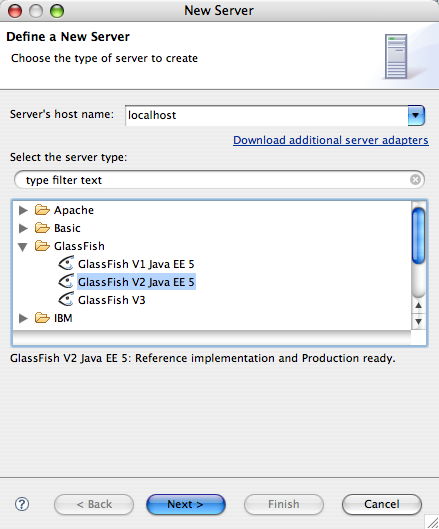 |
| Using
the "Browse..." buttton, navigate to a correct GlassFish installation
directory. IF you have not installed GlassFish, get it from https://glassfish.dev.java.net/downloads/v2-b41d.html |
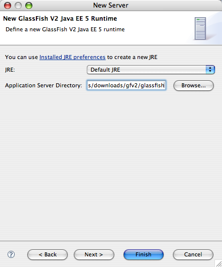 |
| In the Next step of the wizard, you can fine tune some server properties. Default values are usually correct, but adapt them to your environment: | 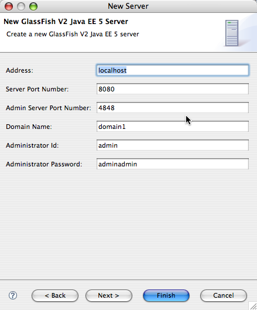 |
| A new Server (GlassFish V2) is now added to the Servers tab. Using the popup meny, you can start it: | 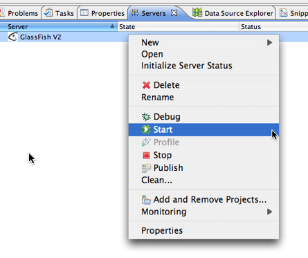 |
| Once started, the server status will be shown as "Started". | 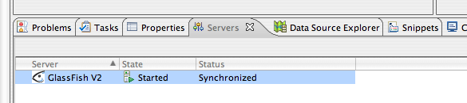 |
| Using the Console Tab, you can see the server log content: | 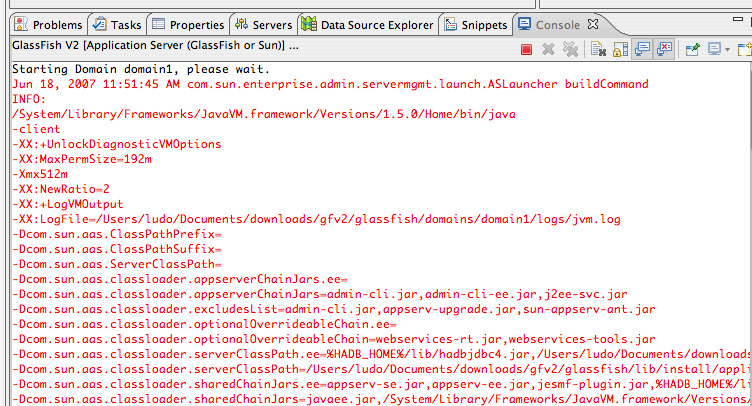 |
| Now it is time to create a Java EE 5 Web Application: on the PRoject Explorer view, if you are using the Java EE perspective, you can use the Popup menu New->Dynamic Web Project: | 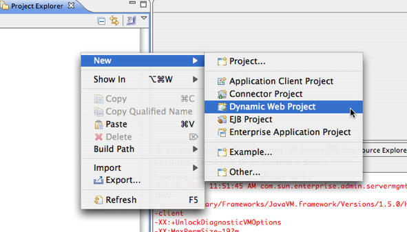 |
| Enter a name and verify that the Target runtime is GlassFish V2 Java EE 5 | 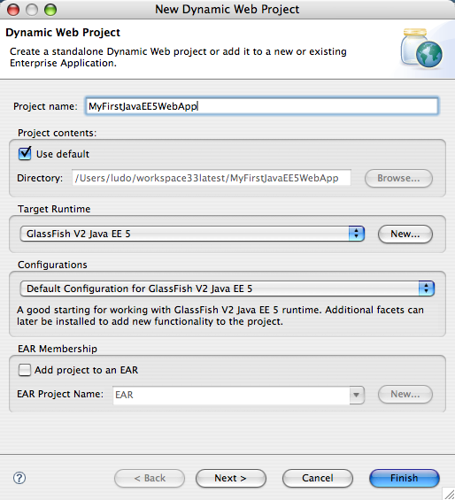 |
| In the Next step, you can verify the that version for Web Application is Servelt 2.5 (java EE 5 compliant), and if you want a default sun-web.xml deployment descriptor, make sure this facet is selected (on by default): | 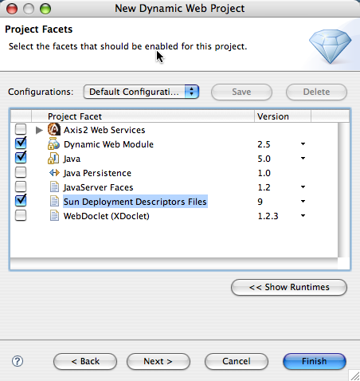 |
| You see the new Web Application on the Project explorer. Just create a new JSP index,jsp (Eclipse does not create it by default): | 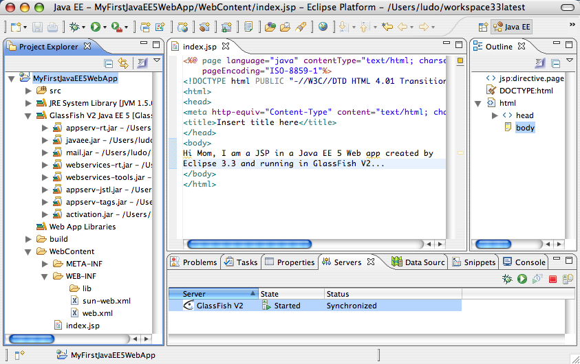 |
| Using the green run button on the Eclipse Tool bar, you are presented with the following choices. Pick the "Run on Server" item: | 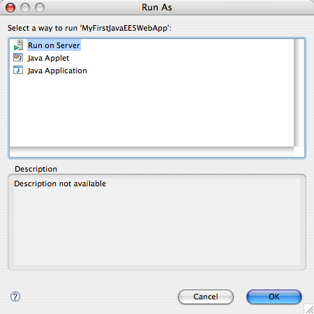 |
| Click the Finish button on the "Run On Server" wizard: | 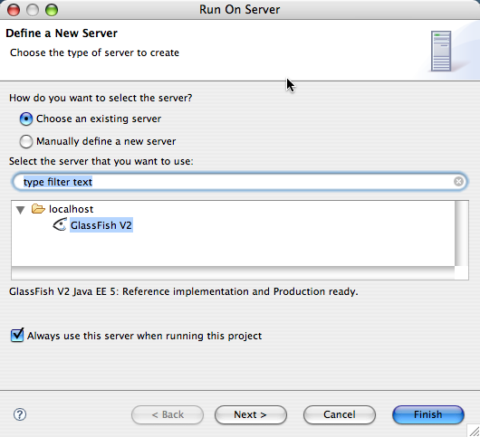 |
| The Web Application is deployed to GlassFish and the index.jsp page is shown in the internal broswer in Eclipse. You can see the deployment status in the Eclipse Console | 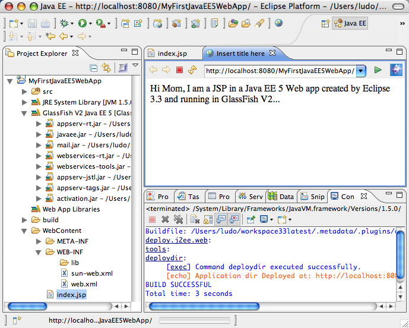 |
| If you need to debug, you could also "DEbug" this Web Application | 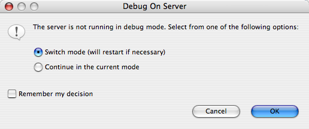 |
| And the GlassFish V2
server will restart in debug mode, and Eclipse will attach to the
debugged server. If you set a breakpoint on a JSP, the server will be stopped and you can use all the Debugger features from Eclipse to debug your Java EE application: |
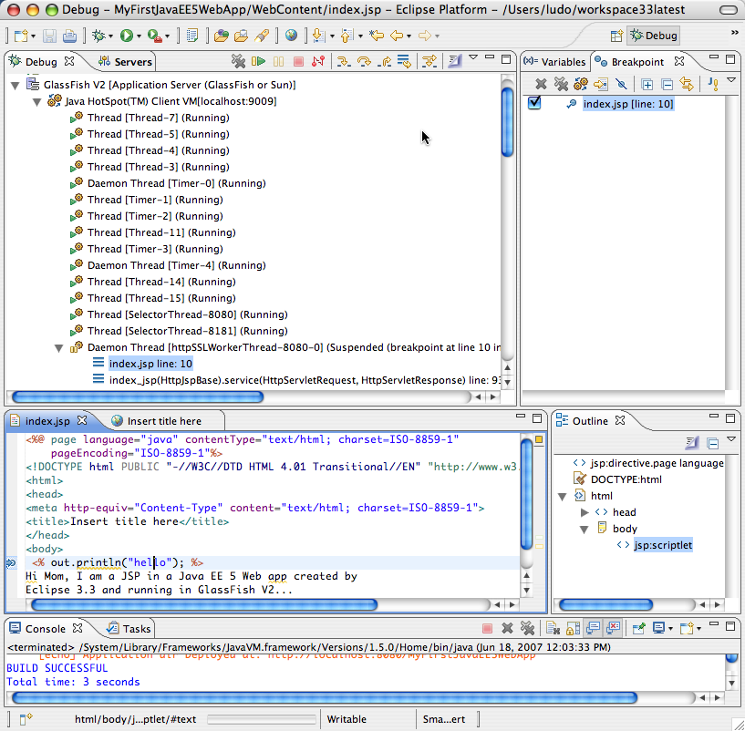 |